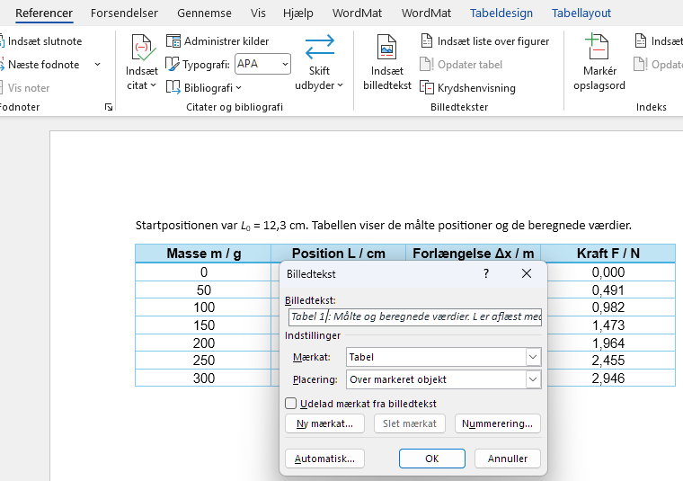

1Tabeltekst over tabellen
Klik et sted i tabellen.
1 Gå til fanen Referencer.
2 Klik på Indsæt billedtekst.
3 Tjek, at der står Mærkat: Tabel og Placering: Over markeret objekt. Word vælger det selv, når du står i en tabel.
4 Skriv din tekst efter ”Tabel 1” i feltet Billedtekst, fx : Målte og beregnede værdier.
5 Klik på OK.
